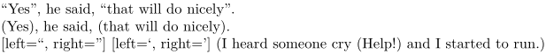

Syntax (autogenerated)
| \setupquotation[...=...,...] | |
| ...=...,... | inherits from \setupdelimitedtext |
Syntax
| \setupquotation[n][...,...=...,...] | |
| [n] | nesting level (optional) |
| [...=...] | see \setupdelimitedtext |
Description
Setup the \quotation and \startquotation environments. See \setupdelimitedtext.
This is MkII only. MkIV uses \setuplanguage with the leftquotation, rightquotation, leftquote and rightquote keys.
Example
-
\enableregime[utf] \quotation{Yes}, he said, \quotation{that will do nicely}. \setupquotation[left=(, right=)] \quotation{Yes}, he said, \quotation{that will do nicely}. \setupquotation[1][left=“, right=”] \setupquotation[2][left=‘, right=’] \quotation{I heard someone cry \quotation{Help!} and I started to run.}
- 
See also
Help from ConTeXt-Mailinglist/Forum
All issues with: